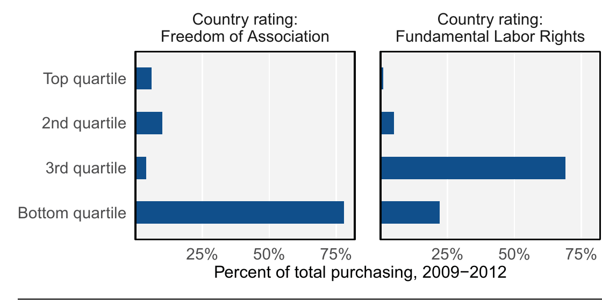
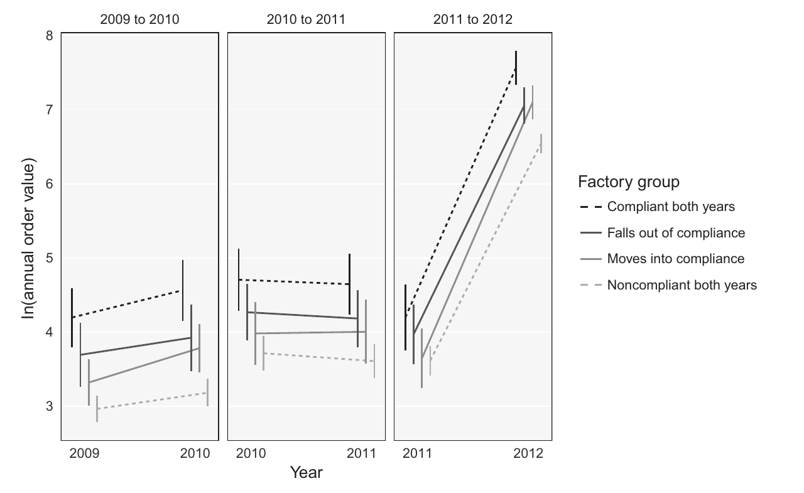
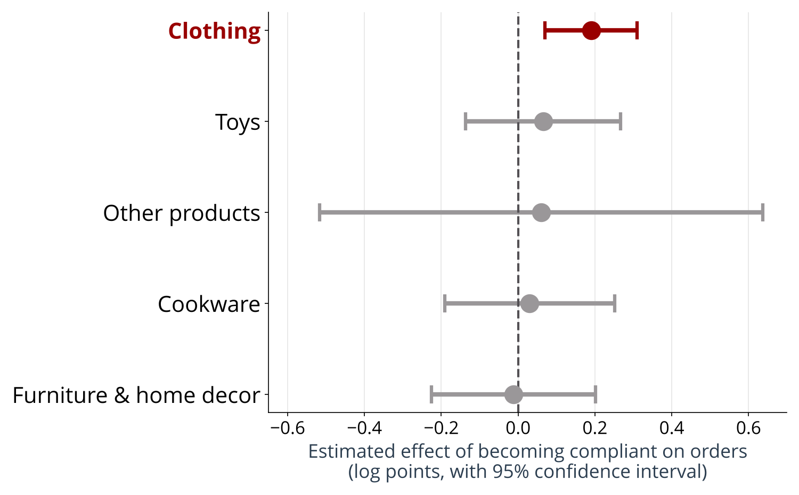

Global Business
INTL-I103 | Day 18 — Does Compliance Pay? Supply Chains, Advocacy & Labor Standards
October 26, 2026
Today’s Plan
Today’s Big Question
Can buyers reward factories for treating workers better, and if they can, why do so many factories still fall short?
| Section | What we’ll cover |
|---|---|
| 1 · Why enforcing standards is hard | Supply chain structure, revisited: why a MNE has challengings enforcing its code of conduct through its supply chain supply chain |
| 2 · Two boomerangs | Keck & Sikkink, revisited: pressuring a government vs. pressuring a brand/MNE |
| 3 · Does compliance pay? | Walking through Distelhorst & Locke (2018) together; fill in your notes handout as we go |
| 4 · Should society care? | Pair discussion: why firms might want high standards, and whether it’s a social problem if they don’t |
Why enforcing standards is hard
Comparing supply chains
| Product | Driven by | Labor | How mobile is production? | Active advocacy? | Governance type | |
|---|---|---|---|---|---|---|
| Coffee | Commodity | A few roasters and retailers | Smallholder growers | Low: tied to where coffee grows | Yes: Fair Trade; the Starbucks campaign | Captive |
| Patagonia | Differentiated, premium | The brand | Factories and mills; migrant workers | Moderate: long-term suppliers | Yes, and the firm itself | Relational at Tier 1; closer to market below it |
| Fast fashion (H&M) | Differentiated by trend, sold at a low price | The brand | Unspecialized (not the same as unskilled) | High: ~850 suppliers and ~2,000 factories | Yes: global unions, Clean Clothes Campaign | ? |
Given these characteristics, where should power, authority, and autonomy accrue? Where can a brand actually impose a standard?
Sources: Gereffi, Humphrey & Sturgeon (2005); Bishop & Milenova (2021); Hoffman (2023), H&M, Rana Plaza and Beyond, p. 8
Can a lead firm enforce a standard through its supply chain?
| Three questions | What a yes requires | H&M and Rana Plaza |
|---|---|---|
| 1 · Can it identify the supplier? | Knowing who actually makes the product, past Tier 1 | Tier 1 suppliers sometimes subcontracted “without the client’s knowledge”; H&M could not be certain its products were never made in Rana Plaza |
| 2 · Does the supplier depend on its orders? | Being a large share of the supplier’s business | Rana Plaza’s five factories subcontracted for many brands (Walmart, The Children’s Place, Mango); H&M switches factories “whenever a cheaper option was available” |
| 3 · Will it stay after a violation? | A long-term relationship worth protecting | Cutting ties protects the brand, not the workers: Patagonia’s termination paradox |
The power to exit is different from, and often contrary to the power to enforce. A brand that can switch suppliers easily has structural power over price, but little leverage over how any one factory treats its workers.
If no single brand has that leverage, who can apply pressure, and on whom?
Sources: Ruggie (2018); Villena & Gioia (2020); Hoffman (2023), pp. 8–10
Two boomerangs
Two boomerangs: who is the target?

Source: Keck & Sikkink (1998), Activists Beyond Borders
When does the boomerang work?
| Keck & Sikkink’s conditions | Starbucks and Ethiopia | Rana Plaza, 2013 |
|---|---|---|
| Bodily harm to vulnerable people | No: trademarks and coffee prices | Yes: 1,132 killed, about 2,500 injured |
| A short, clear causal chain | Yes: one brand, one product | No: H&M could not say whether its clothes had been made there |
| A reputation-sensitive target | Yes: a brand built on social responsibility | Yes: consumer-facing fashion brands |
| A network with strength and density | NGOs and the Ethiopian government | Global unions (IndustriALL, UNI) and advocacy groups such as the Clean Clothes Campaign |
Shaming raises the cost of being caught. But does it change where buyers actually place their orders? That is an empirical question.
Sources: Keck & Sikkink (1999), pp. 97–98; Hoffman (2023), pp. 2, 7, 9–10, Exhibit 10
Does compliance pay (walking through the article)?
Two competing predictions
| Trade leads to… | …through states | …through firms |
|---|---|---|
|
Race to the bottom standards fall |
States compete by reducing regulatory burdens | Exporters compete by reducing compliance with standards |
|
California effects standards rise |
States negotiate common standards; powerful parties set them | Importers prefer buying from higher-standards exporters |
Redrawn from Distelhorst & Locke (2018), Figure 1. The shaded column is this study; earlier research looked at states.
A firm-level race to the bottom needs two assumptions to hold at once (p. 3):
- Meeting labor and environmental standards raises a factory’s prices
- Buyers won’t pay more to buy from compliant factories
Your prediction: when a factory moves from noncompliant to compliant, do its orders rise or fall? Under what conditions.
The data: whose orders, which factories?

Source: Distelhorst & Locke (2018), Figure 3: share of purchasing by exporting countries’ labor-rights ratings
- A global sourcing agent matches buyers with factories and audits those factories. Its buyers are mostly retailers (79%), mostly headquartered in North America (73%)
- One observation: one factory in one year, 2009–2012; 2,447 factories in the main analysis
- Compliance: the audit grade, A to D. A or B counts as compliant (28% of factory-years)
- Orders: each factory’s annual order value, reported in 13 ranges
Audits are snapshots and miss a lot, especially freedom of association. But they are what buyers see, so they measure compliance as buyers perceive it.
Source: Distelhorst & Locke (2018), pp. 5–6 and Table 2
The naive comparison
| Factories in 2012 | Compliant | Noncompliant |
|---|---|---|
| Annual orders (average) | $4.1 million | $2.5 million |
| Clothing manufacturer | 59% | 47% |
| Employees (average) | 677 | 581 |
| On-time delivery | 75% | 71% |
| Pass quality inspection | 94% | 91% |
| Located in Bangladesh | 1% | 8% |
| Share of all factories | 21% | 79% |
Source: Distelhorst & Locke (2018), Table 1, p. 7
Compliant factories received 64% more in orders. Does compliance pay, then?
Not so fast. Compliant factories are also bigger, better at delivery and quality, and located in different places. Any of those could attract buyers on its own. This is a selection effect.
A confounder affects both the explanatory factor (compliance) and the outcome (orders), so the simple comparison mixes several effects together.
The better comparison: each factory against itself

Source: Distelhorst & Locke (2018), Figure 4 (top panel), p. 11
- Fixed effects: compare each factory with itself before and after its compliance changes
- Difference-in-differences: compare the change for factories that move into compliance with the change for those that stay noncompliant
Rules out: anything about a factory that doesn’t change, such as its country, its products, or its owners. Can’t rule out: things that change within a factory at the same time
Becoming compliant: about 4% more in annual orders [1%, 7%], roughly $110,000 a year. Falling out of compliance brings a weaker penalty.
Source: Distelhorst & Locke (2018), Tables 2–3, pp. 8–10
Heterogeneous Treatment Effects (does the effect depend on the industry)?

Source: redrawn from Distelhorst & Locke (2018), Table 4, column 1, p. 13
Only in clothing is the effect clearly different from zero, and it is roughly three times the next largest estimate.
Clothing is the industry targeted by three decades of anti-sweatshop campaigns. Furniture and cookware were not.
The authors’ interpretation: buyers under activist pressure prefer compliant factories to reduce reputational risk. Compliance with parent standards, then, depends also on a effective social pressure campaigns (boomerang model).
Source: Distelhorst & Locke (2018), pp. 10–11
What the article can’t tell us
| Limit | Why it matters |
|---|---|
| Higher prices or more orders? | If the 4% is more orders, a factory earning a 2% profit margin gains just 0.08% (2% × 4%). If it is a higher price, its margin rises from 2% to 6.1% |
| Does it cover the cost of compliance? | The data include no compliance costs, so we can’t tell whether the extra orders outweigh what it costs a factory to comply |
| One sourcing agent | The factories’ other buyers may not care about compliance, so the 4% may simply be orders moving between buyers |
| Scope | Western retailers and light manufacturing; not electronics, minerals, or agriculture |
| Is it enough? | 79% of factories were noncompliant in 2012. Paying a living wage could raise unit prices by 2–12% |
“Although the net impact of activist campaigns and resulting private regulatory activities may be positive, this model still falls far short of guaranteeing basic rights for the millions of workers employed in global supply chains.” Distelhorst & Locke (2018), p. 15
Source: Distelhorst & Locke (2018), pp. 14–15; Table 1
Should MNEs set and enforce standards anyway?
Two different questions
An empirical question about firms’ incentives
- Reputation: avoiding the next spotlight campaign
- A modest reward in orders, mostly where activists have campaigned
- Perhaps a “high road” to growth for small exporters (p. 15)
A normative question about responsibility
- If a standard protects workers’ lives, should compliance depend on whether buyers reward it? Should state regulation compel compliance instead?
- Who should bear the cost of these standards: brands, factory owners, consumers, or governments?
- Whose standards are these anyway, and who gets to set them? Private corporate interests? Democratically elected governments? Transnational advocacy networks? Capital exporting countries?
Takeaways and Wednesday
- Supply chain structure decides how much a lead firm can impose a standard over its supplier. A brand that can easily switch suppliers can walk away, but it can’t make any one factory comply.
- The boomerang can target firms as well as states, and it is most effective when the harm is bodily and the causal chain is short
- Compliance pays, a little, and mostly where activists have pushed. That means most factories still don’t have huge incentives to comply
Wednesday: H&M, Rana Plaza and Beyond. Come prepared to answer: What happened at Rana Plaza, and what was known the day before? How does H&M organize production, compared with Zara? What did the 2013 Accord require, who refused to sign, and why? What did the 2021 International Accord add?
Questions?
See you Wednesday.

INTL-I103 | Global Business